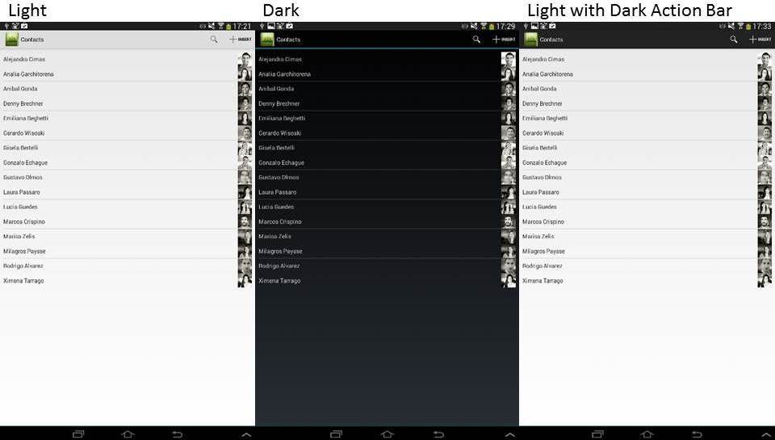

| Dark | Black background, white fonts, and black application bar. |
| Light | White background, black fonts, and white application bar. |
| Light with Dark Action Bar | White background, black fonts, and black application bar. |
| Default | Uses different default values, depending on OS preferences. |
Objects: Menu, Panel, Work With (Only Main Objects)
Generators: Android, Apple
With this property, you can set a dark or light style for applications.
It applies to the background, fonts, and application bar color.
The Theme object can be set with all the classes available to customize the application design.
This property applies only at design-time.

To apply the corresponding changes when the property value is configured, execute a Build All.
| Backlinks | |
| ApplicationBars theme-class for Smart Devices | Enable Preferred Color Scheme property |
| Native Mobile Main object properties |